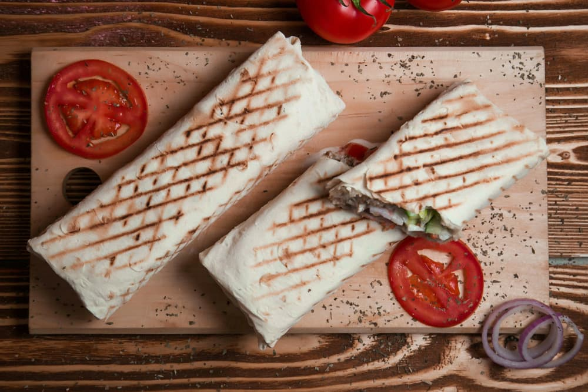
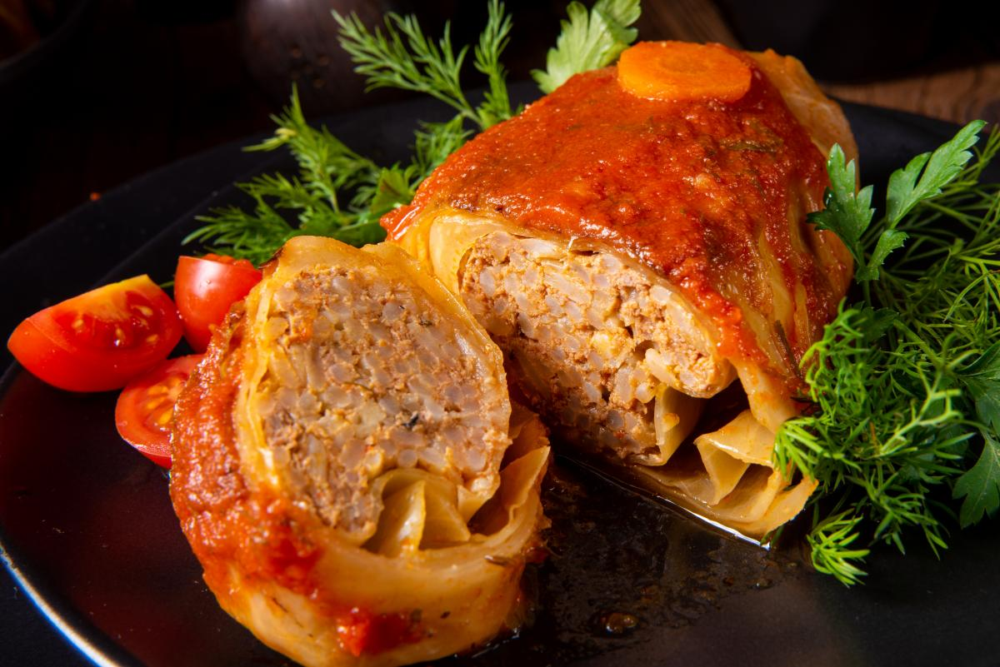

Спочатку готуємо м’ясо. Для цього промиваємо та подрібнюємо філе. Окремо шаткуємо цибулю та смажимо її на сковорідці до прозорості, після чого додаємо м’ясо, солимо та перчимо. Курка смажиться дуже швидко, достатньо 5-7 хвилин.
Рецепт соусу досить простий. Основу першого становить кетчуп, який змішуємо з будь-якою приправою, наприклад, базиліком або хмелі-сунелі. Для другого соусу знадобиться майонез, кефір і натертий часник. Обидва соуси ретельно перемішуємо в окремих мисочках.
Настала черга лаваша — ділимо лист на дві частини, одну з них розкладаємо на рівну поверхню. Намазуємо соусами, на правий край викладаємо м’ясо, потім овочеву начинку та загортаємо.
Капусту розібрати на листя, помістити в миску та посолити. Закип'ятити чайник, залити окропом листя, накрити кришкою і залишити на 15-20 хвилин.
Рис добре промити й варити у великій кількості підсоленої води до напівготовності, 10-12 хвилин. Потім відкинути його на друшляк і промити холодною водою.
Моркву очистити й натерти на великій тертці. Цибулю почистити, нарізати кубиками. Розігріти сковороду, налити рослинну олію. Обсмажити на середньому вогні цибулю та моркву, помішуючи, 1-2 хвилини.
